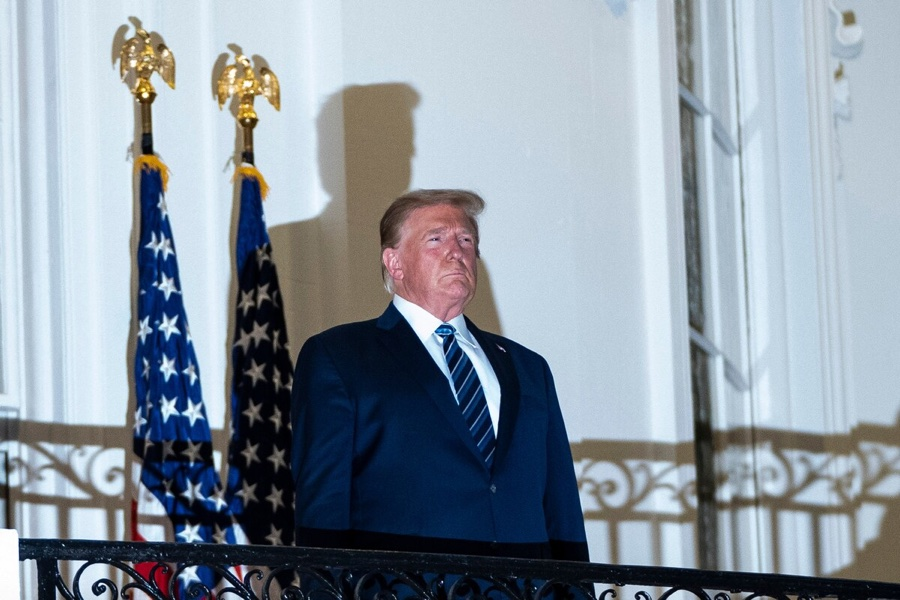

Illiberal Democracy and Contestation of the Liberal Order: The Case of Trump’s America
Honourable Mention

Abstract
In the contemporary era, the liberal international order is experiencing significant instability, as scholars had predicted. They developed various hypotheses regarding the erosion of said order, including the use of democratic means as instruments of subversion where constitutional liberalism was not sufficiently entrenched, the loss of trust in liberal democratic institutions, and the rise of illiberal powers such as Russia and China. Most of these hypotheses proved true, but a key element was overlooked: the United States as a potential agent of subversive change. This paper aims to investigate the correlation between the growing global trend towards illiberalism, the contestation of the liberal international order, and the important role of the United States in the process. It explains how illiberal democracy contests the international liberal order, whose institutional structures and mechanisms produce dynamics that lead to high expectations — and disappointment when these are not met. It also argues that liberal actors have increasingly legitimised illiberal practices, weakening the normative appeal of the liberal international order. The subsequent discussion explores the pivotal shift away from the United States' role as the historical leader of liberal democracy, especially under Donald Trump’s administration. The article concludes by proposing concrete reforms to restore liberal legitimacy and reform the liberal international order in light of the current international context, taking the Montreal Protocol as a model of successful multilateral governance.
Keywords: Liberal International Order, Illiberal Democracy, Illiberalism, Donald Trump, United States.